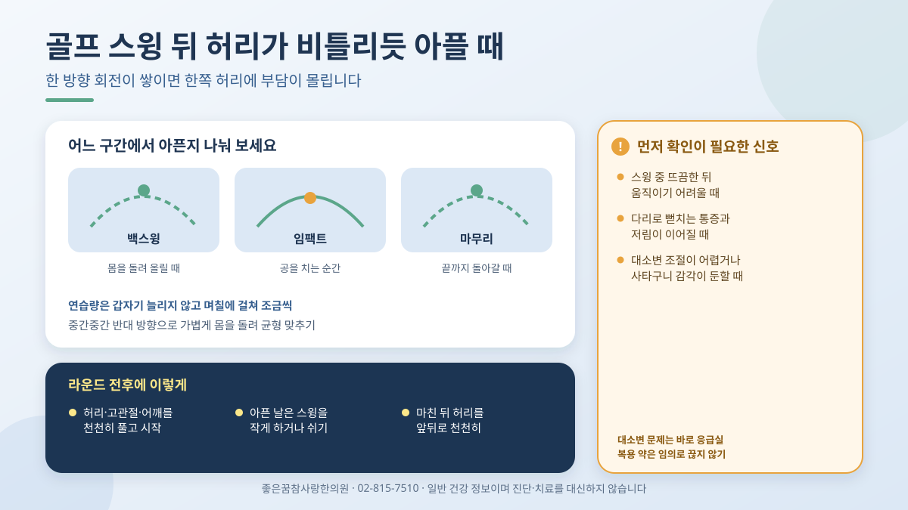

이종호 한의사 감수좋은꿈참사랑한의원 대표원장 (한의사 면허번호 19769)발행 2026-11-23 · 수정 2026-11-26
이 글의 차례
- 왜 이런 불편이 생길 수 있나요
- 먼저 이렇게 여쭙니다
- 일상에서 먼저 해 볼 수 있는 것
- 상황별 예시
- 스스로 점검해 보세요
- 근육 뻐근함과 다른 허리 통증은 어떻게 구분하나요?
- 왜 연습장에서 친 다음 날 더 아플까요
- 스윙 습관 가운데 허리와 이어지는 부분
- 연습과 몸 상태를 이렇게 적어 보세요
- 한의원에서는 어떤 치료를 어떻게 정하나요?
- 겨울 라운드는 무엇을 더 챙길까요?
- 고관절과 등이 잘 돌아가는지 집에서 확인해 보세요
- 동반자와 함께 정해 두면 좋은 것
- 한의원에서 함께 살필 수 있는 경우
- 얼마나 지켜보고 언제 상담할까요
- 이렇게 기록해 오시면 상담이 쉬워집니다
- 이런 증상은 먼저 확인이 필요합니다
- 관련 글
스윙 뒤 허리 한쪽이 비틀리듯 아프다면, 며칠은 연습량과 스윙 크기를 줄이고 스윙의 어느 구간에서 아픈지부터 살펴보는 것이 먼저입니다. 연습장에서 공을 많이 치거나 오랜만에 라운드를 나간 다음 날, 허리 한쪽이 당기거나 비틀리는 듯한 통증을 느끼는 분이 있습니다.
스윙은 같은 방향으로만 몸을 돌리는 운동이라 한쪽에 부담이 쌓이기 쉽습니다. 아픈 구간과 연습량을 함께 보면 조절할 부분이 보입니다.
손꼽아 기다린 주말 라운드였는데 다음 날 허리 때문에 세수도 조심스러우면 마음까지 무거워지지요. 저는 아프지 않게 해 드리는 데서 한 걸음 더 나아가, 좋아하시는 운동을 오래 이어 가실 수 있게 돕고 싶습니다.
왜 이런 불편이 생길 수 있나요
- 고관절과 등이 잘 돌아가지 않으면 그만큼 허리가 더 많이 비틀리며 스윙을 만들어 내야 합니다.
- 연습장에서 짧은 시간에 공을 많이 치면 같은 방향의 회전이 수없이 반복됩니다.
- 같은 방향으로만 돌다 보면 한쪽 근육만 더 쓰여 골반의 좌우 균형이 흔들리고, 허리와 어깨가 이를 메우느라 긴장하기도 합니다.
- 추운 날 몸을 충분히 풀지 않고 첫 샷을 하면 근육이 준비되지 않은 상태에서 큰 힘을 쓰게 됩니다.
- 공을 줍고 티를 꽂느라 허리만 숙였다 펴는 동작도 라운드 내내 반복됩니다.
- 골프백을 한쪽 어깨로 메고 걷거나 카트에 오래 앉아 있는 것도 허리 피로를 더할 수 있습니다.
먼저 이렇게 여쭙니다
- 스윙의 어느 구간에서 아픈가요? 백스윙인지, 임팩트인지, 마무리인지요.
- 어느 방향으로 스윙하시고, 아픈 쪽은 어느 쪽인가요?
- 최근에 연습량이나 라운드 횟수가 갑자기 늘었나요?
- 주로 연습장에서 치시나요, 라운드가 많나요?
- 라운드 전에 몸을 풀고 시작하시나요?
- 평소 허리 통증이 있었나요?

일상에서 먼저 해 볼 수 있는 것
라운드·연습 전 10분
- 가볍게 걸어 몸을 데운 뒤, 클럽을 양손으로 어깨 높이에 들고 상체를 좌우로 천천히 돌리기를 10번씩 합니다. 억지로 끝까지 비틀지 말고 편한 범위에서 멈춥니다.
- 다리를 앞뒤로 벌려 서서 뒤쪽 다리의 고관절 앞쪽을 15초씩 늘리고, 짧은 클럽으로 작은 스윙부터 시작합니다.
연습하는 동안
- 연습량은 갑자기 늘리지 않고 며칠에 걸쳐 조금씩 늘립니다. 허리가 뻐근한 날은 평소 치던 공의 70% 정도로 줄이거나 스윙 크기를 줄입니다.
- 공 20~30개마다 1~2분 쉬며 허리를 펴고, 반대 방향으로 가볍게 연습 스윙을 몇 번 해 좌우 균형을 맞춥니다.
- 공을 줍거나 티를 꽂을 때는 허리만 숙이지 말고 무릎을 굽히거나 한쪽 다리를 뒤로 들며 몸 전체로 숙입니다.
라운드를 마친 뒤
- 허리를 천천히 앞뒤로 움직이며 정리하고, 골프백은 양쪽 끈이나 카트를 써서 한쪽 어깨로만 메지 않습니다.
- 차를 오래 타고 돌아가야 한다면 1~2시간마다 쉬며 내려 걷습니다.
- 집에서는 바로 누워 무릎을 세우고 두 무릎을 좌우로 천천히 눕히기를 아프지 않은 범위에서 10번 합니다.
상황별 예시
- 예를 들어 평일 저녁 연습장에서 쉬지 않고 공을 많이 치는 직장인이 다음 날 아침 허리 한쪽이 당긴다면, 치는 공의 수를 줄이고 30개마다 쉬는 시간을 넣어 봅니다.
- 예를 들어 겨우내 쉬다가 봄에 첫 라운드를 나간 분이 이틀 뒤까지 허리가 뻐근하다면, 다음에는 라운드 전 몇 주 동안 연습량을 조금씩 늘리며 몸을 먼저 준비해 봅니다.
- 예를 들어 60대에 골프를 즐기는 분이 스윙 마무리에서 허리가 뻐근하고 아침마다 허리가 뻣뻣하다면, 마무리 자세를 끝까지 크게 돌리기보다 편한 범위에서 멈추고, 엉덩이나 다리로 저림이 내려가는지 함께 살핍니다.
스스로 점검해 보세요
- 스윙의 특정 구간에서 허리 한쪽이 찌릿하거나 당긴다.
- 한 번에 쉬지 않고 공을 많이 치는 편이다.
- 라운드 다음 날 아침 허리가 가장 뻣뻣하다.
- 평소와 반대 방향으로 몸을 돌리면 덜 돌아가거나 어색하다.
- 앉아 있다가 일어설 때 허리를 바로 펴기 어렵다.
- 엉덩이나 허벅지 뒤로 당기는 느낌이 가끔 있다.
- 준비운동 없이 첫 샷을 하는 날이 많다.
근육 뻐근함과 다른 허리 통증은 어떻게 구분하나요?
스윙 뒤 허리 통증도 몇 갈래로 나뉩니다. 갈래에 따라 연습을 이어 가도 되는지, 무엇을 먼저 줄일지가 달라져서 처음에는 아픈 느낌을 자세히 여쭙습니다.
- 근육이 지친 뻐근함: 연습 다음 날 허리 한쪽이 넓게 묵직하고, 가볍게 걷거나 씻고 나면 조금 풀립니다. 2~3일 사이에 서서히 가라앉는 흐름이 많습니다.
- 회전할 때만 찌릿한 통증: 평소에는 괜찮다가 몸을 특정 방향으로 돌릴 때만 허리 한 점이 콕 집어 아픕니다. 같은 구간에서 반복된다는 점이 실마리입니다.
- 엉치와 골반 뒤쪽 불편: 허리띠 아래 엉덩이 위쪽이 아프고, 한쪽 다리로 체중을 실을 때 더해집니다. 스윙 마무리에서 체중이 옮겨 가는 쪽에 잘 생깁니다.
- 다리로 내려가는 저림: 엉덩이에서 허벅지 뒤나 종아리로 당기거나 저립니다. 허리를 숙이거나 오래 앉으면 더해지는 경우가 있습니다.
갈래를 나누는 것은 스스로 진단하려는 것이 아니라, 진료실에서 어느 동작부터 확인할지 정하기 위한 것입니다. 두세 갈래가 겹치는 분도 있습니다.
왜 연습장에서 친 다음 날 더 아플까요
연습장에서는 같은 클럽으로 같은 스윙을 짧은 시간에 수십 번 반복합니다. 라운드에서는 걷고 기다리는 시간이 섞이지만, 연습장에서는 쉬는 틈 없이 같은 방향의 회전이 이어집니다.
공이 자동으로 올라오는 타석이 아니라면 공을 놓을 때마다 허리를 숙였다 펴는 동작도 함께 반복됩니다. 매트가 딱딱하면 클럽이 바닥에 닿는 충격이 손목과 허리까지 전해지기도 합니다.
퇴근 뒤 몸이 지친 상태에서 짧은 시간에 많이 치려는 마음도 부담을 키웁니다. 하루 종일 앉아 있다가 준비운동 없이 바로 큰 스윙을 하면, 굳은 고관절 대신 허리가 그 몫을 떠안기 쉽습니다.
스윙 습관 가운데 허리와 이어지는 부분
스윙을 고치는 것은 레슨의 몫이지만, 허리 부담과 이어지는 몇 가지는 스스로 점검해 볼 수 있습니다.
- 어드레스 때 허리를 둥글게 말아 숙이고 있지 않은지 봅니다. 엉덩이를 뒤로 빼며 고관절에서 숙이면 허리가 덜 말립니다.
- 백스윙에서 하체를 꽉 고정한 채 상체만 많이 돌리고 있지 않은지 살핍니다.
- 마무리에서 허리를 뒤로 크게 젖히며 끝나는 습관이 있다면, 편한 높이에서 멈추는 연습을 해 봅니다.
연습하는 모습을 휴대폰으로 옆과 뒤에서 한 번씩 찍어 두면 스스로 알아채기 쉽고, 상담 때 몸의 좌우 균형을 살피는 데도 참고가 됩니다.
연습과 몸 상태를 이렇게 적어 보세요
연습한 날에는 친 공의 수와 주로 쓴 클럽, 쉬는 간격을 적고 다음 날 아침 허리 상태를 0~10점으로 붙입니다. '공 150개, 드라이버 위주, 쉬지 않음, 다음 날 5점'처럼 짧게 쓰면 됩니다.
라운드를 다녀온 날은 걷기와 카트 이용 여부, 돌아오는 길에 차를 탄 시간도 함께 적어 두세요. 2~3주가 쌓이면 어떤 날 허리가 더 힘들었는지가 기록에서 보입니다.
한의원에서는 어떤 치료를 어떻게 정하나요?
허리 한쪽과 엉덩이 근육이 굳어 있다면 침이나 약침을, 골반의 좌우 균형이 흐트러져 있다면 추나를, 근육 긴장이 깊고 몸이 차다면 온열 물리치료를 함께 고려합니다. 힘줄 쪽 불편이 오래 이어지면 체외충격파를 상의하기도 합니다.
라운드 다음 날 피로가 오래가고 잠이 얕다면 한약을 함께 이야기하기도 합니다. 이때는 지금 드시는 약을 먼저 확인합니다.
겨울 라운드는 무엇을 더 챙길까요?
추운 날에는 근육이 덜 풀린 채 첫 샷을 하기 쉬워, 준비운동 시간을 평소보다 조금 늘리는 것이 좋습니다. 겉옷을 여러 겹 입어 몸을 따뜻하게 유지하되, 스윙할 때 팔과 몸통이 편하게 돌아가는지 확인하세요.
홀 사이를 이동하는 동안 카트에 웅크리고 앉아 있기보다 가능한 구간은 걸어서 몸을 데워 둡니다. 따뜻한 물을 챙겨 조금씩 마시는 것도 몸이 식지 않게 하는 데 도움이 됩니다.
고관절과 등이 잘 돌아가는지 집에서 확인해 보세요
허리가 스윙의 회전을 혼자 떠안지 않으려면 고관절과 등이 함께 돌아가야 합니다. 아래 동작으로 좌우 차이를 가볍게 확인해 볼 수 있습니다.
- 의자에 바르게 앉아 팔짱을 끼고 상체를 좌우로 천천히 돌려 봅니다. 한쪽이 덜 돌아가거나 어색하다면 등의 회전에 좌우 차이가 있을 수 있습니다.
- 바로 누워 한쪽 무릎을 세운 채 반대쪽으로 천천히 넘겨 봅니다. 넘어가는 정도가 좌우로 다르다면 고관절과 골반 주변을 함께 살필 때입니다.
이 확인은 진단이 아니라 스스로 알아채기 위한 것입니다. 아프지 않은 범위에서만 하고, 차이가 크다고 느껴지면 상담 때 말씀해 주세요.
동반자와 함께 정해 두면 좋은 것
라운드 중 허리가 뜨끔했다면 남은 홀을 무리해서 마치기보다 쉬어도 된다는 것을 동반자와 미리 이야기해 두세요. 아픈 채로 스윙을 계속하면 몸이 아픈 곳을 피하려고 자세가 무너져, 다른 곳까지 부담이 번지기 쉽습니다.
쉬는 동안에는 카트에 앉아 허리를 기대고 숨을 고르며, 다음 라운드 일정은 허리 상태를 보고 다시 정하세요.
한의원에서 함께 살필 수 있는 경우
- 스윙한 뒤 허리 한쪽이 굳고 펴기 불편한 경우 동작과 근육의 긴장을 함께 살핍니다.
- 다가오는 라운드가 있어 연습을 어떻게 줄이고 되돌릴지 고민되는 경우 일정에 맞춰 강도를 함께 정합니다.
- 라운드 다음 날 몸이 무겁고 피곤이 가시지 않는 경우 회복 리듬과 잠을 함께 살핍니다.
좋은꿈참사랑한의원에 오시면 모든 분의 맥을 먼저 짚고, 스윙의 어느 구간에서 언제부터 아팠는지, 연습량이 어떻게 바뀌었는지, 평소 허리 상태는 어떤지를 여쭙습니다. 잠과 식사, 라운드 다음 날의 피로도 함께 듣습니다.
이어서 서 있는 자세에서 좌우 균형을 먼저 보고, 허리를 숙이고 젖히고 돌리는 움직임과 고관절이 돌아가는 범위, 다리 힘과 저림을 확인하며, 근육이나 힘줄 쪽이 의심되면 필요하다고 판단될 때 초음파로 함께 살핍니다.
다음 라운드 일정이 있다면 그 날짜에 맞춰 연습을 언제 얼마나 다시 늘릴지 거꾸로 계산해 함께 정합니다. 평일은 저녁 8시까지(점심 13시~14시), 토·일·공휴일은 오후 3시까지 점심시간 없이 진료합니다.
얼마나 지켜보고 언제 상담할까요
- 가벼운 뻐근함이라면 며칠은 연습을 줄이거나 쉬고, 걷기 같은 일상 움직임은 아프지 않은 범위에서 이어 가며 지켜볼 수 있습니다.
- 스윙 중 뜨끔한 뒤 허리를 움직이기 어려울 만큼 아프면 그날 연습은 멈추고 서둘러 진료를 받아 보세요.
- 1~2주가 지나도 같은 스윙 구간에서 계속 아프거나, 쉬는 날에도 허리를 펴기 불편하면 상담을 받아 보세요.
- 엉덩이나 다리로 당기는 느낌이 새로 생겼거나 점점 아래로 내려간다면 미루지 말고 확인합니다.
- 다시 칠 때는 짧은 클럽의 작은 스윙부터 시작해, 다음 날 아침 허리 상태를 보며 스윙 크기와 공의 수를 조금씩 되돌립니다.
이렇게 기록해 오시면 상담이 쉬워집니다
- 최근 연습 횟수와 한 번에 치는 공의 양
- 아픈 스윙 구간(백스윙·임팩트·마무리)과 아픈 쪽
- 다리로 내려가는 저림이 있는지
- 예전에 허리를 다친 적이 있는지
- 다가오는 라운드 날짜
- 드시는 약과 다른 병원 검사 결과지
다음에 오시면 어느 구간에서 아팠는지, 공의 수를 줄인 날은 어땠는지부터 여쭙겠습니다. 다음 라운드를 편한 허리로 맞으실 수 있게 함께 순서를 정해 보겠습니다.
이런 증상은 먼저 확인이 필요합니다
- 다리나 발에 힘이 빠지거나, 대소변 조절이 어렵거나 엉덩이·사타구니 감각이 둔해진 경우
- 넘어진 뒤나 골다공증이 있는 분이 허리가 갑자기 심하게 아파 움직이기 어려운 경우, 허리 통증에 열이 나는 경우
이런 신호가 있으면 한의원보다 가까운 병원이나 응급실을 먼저 찾으세요.
관련 글

여쭙는 것
- 스윙의 어느 구간에서 아픈가요? 백스윙인지, 임팩트인지, 마무리인지요.
- 어느 방향으로 스윙하시고, 아픈 쪽은 어느 쪽인가요?
- 최근에 연습량이나 라운드 횟수가 갑자기 늘었나요?
생활에서 해 볼 것
- 가볍게 걸어 몸을 데운 뒤, 클럽을 양손으로 어깨 높이에 들고 상체를 좌우로 천천히…
- 다리를 앞뒤로 벌려 서서 뒤쪽 다리의 고관절 앞쪽을 15초씩 늘리고, 짧은 클럽으로…
- 연습량은 갑자기 늘리지 않고 며칠에 걸쳐 조금씩 늘립니다. 허리가 뻐근한 날은 평소…
한의원에서 함께 살필 것
- 스윙한 뒤 허리 한쪽이 굳고 펴기 불편한 경우 동작과 근육의 긴장을 함께 살핍니다.
- 다가오는 라운드가 있어 연습을 어떻게 줄이고 되돌릴지 고민되는 경우 일정에 맞춰 강…
- 라운드 다음 날 몸이 무겁고 피곤이 가시지 않는 경우 회복 리듬과 잠을 함께 살핍니다.
먼저 확인이 필요한 신호
- 다리나 발에 힘이 빠지거나, 대소변 조절이 어렵거나 엉덩이·사타구니 감각이 둔해진 경우
- 넘어진 뒤나 골다공증이 있는 분이 허리가 갑자기 심하게 아파 움직이기 어려운 경우,…
한눈에 보는 표
| 구분 | 핵심 |
|---|---|
| 여쭙는 것 | 스윙의 어느 구간에서 아픈가요? 백스윙인지, 임팩트인지, 마무리인지요. 어느 방향으로 스윙하시고, 아픈 쪽은 어느 쪽인가요? |
| 생활에서 해 볼 것 | 가볍게 걸어 몸을 데운 뒤, 클럽을 양손으로 어깨 높이에 들고 상체를 좌우로 천천히 돌리기를 10번씩 합니다. 억지로 끝까지 비틀지 말고 편한 범위에서 멈춥니다. 다리를 앞뒤로 벌려 서서 뒤쪽 다리의 고관절 앞쪽을 15초씩 늘리고, 짧은 클럽으로 작은 스윙부터 시작합니다. |
| 한의원에서 함께 살필 것 | 스윙한 뒤 허리 한쪽이 굳고 펴기 불편한 경우 동작과 근육의 긴장을 함께 살핍니다. 다가오는 라운드가 있어 연습을 어떻게 줄이고 되돌릴지 고민되는 경우 일정에 맞춰 강도를 함께 정합니다. |
| 먼저 확인이 필요한 신호 | 다리나 발에 힘이 빠지거나, 대소변 조절이 어렵거나 엉덩이·사타구니 감각이 둔해진 경우 넘어진 뒤나 골다공증이 있는 분이 허리가 갑자기 심하게 아파 움직이기 어려운 경우, 허리 통증에 열이 나는 경우 |
자주 묻는 질문
골프를 계속해도 되나요?
가벼운 뻐근함이라면 연습량과 스윙 크기를 줄이며 지켜볼 수 있지만, 통증이 심하거나 다리 저림이 있다면 쉬면서 상담해 보시길 권합니다.
비거리를 늘리려고 회전을 크게 하는데 괜찮을까요?
몸이 준비되지 않은 상태에서 회전만 키우면 허리에 부담이 몰릴 수 있습니다. 고관절과 등의 움직임을 함께 늘리는 쪽이 부담을 나누는 방법입니다.
라운드 전에 스트레칭만 하면 충분한가요?
준비운동은 부담을 줄이는 데 도움이 될 수 있지만, 연습량과 쉬는 날을 함께 조절하는 것이 좋습니다.
허리가 아픈 날 몸을 비틀어 풀어 주면 괜찮아질까요?
아픈 쪽으로 억지로 비틀거나 당겨 늘리면 오히려 부담이 될 수 있습니다. 아프지 않은 범위에서 스스로 천천히 움직이는 가벼운 동작부터 하시고, 통증이 늘면 멈추세요.
좋은꿈참사랑한의원은 재진 때 지난번 이야기부터 이어서 여쭙니다. 진료시간과 예약은 오시는 길에서 확인하세요.
어디서 상담받을 수 있나요?
좋은꿈참사랑한의원은 서울 동작구 만양로2길 2 신성빌딩 3층·5층(서울 동작구 상도동, 7호선 상도역 3번 출구 근처)에 있습니다. 한의사 3명(이종호 대표원장, 조영기 수석진료원장, 정원영 진료원장)이 진료합니다. 진료시간은 평일 09:30~20:00(점심 13:00~14:00), 토·일·공휴일 09:30~15:00이며, 방문 전 전화로 확인을 권합니다. 예약은 네이버 예약, 카카오톡 상담, 전화 02-815-7510로 받습니다.
이 글은 일반적인 건강 정보이며 개인의 진단이나 치료를 대신하지 않습니다. 증상이 있거나 복용 중인 약이 있다면 진료를 통해 확인하세요. 치료 효과는 개인마다 다를 수 있습니다.
작성 기준: 일반적으로 알려져 있는 건강 정보를 참고해 정리했습니다(대표원장 감수). 증상 기록은 1~2주 동안 하루 1회, 비슷한 시간에 적어 오시면 지난 상태와 비교하기 쉽습니다.